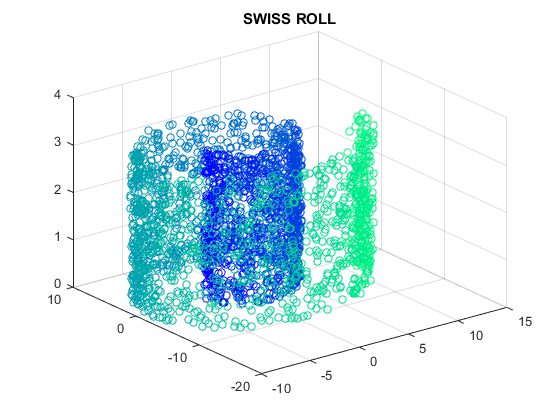
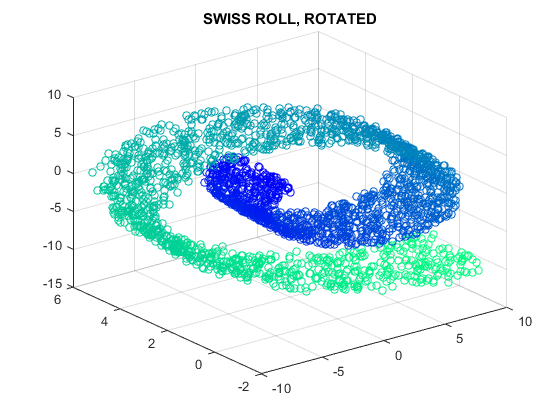
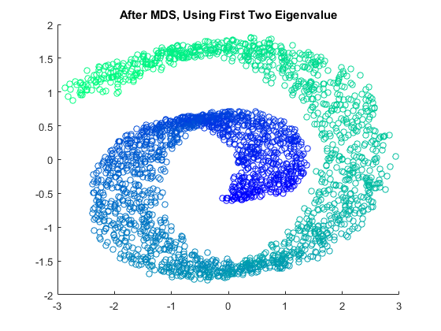
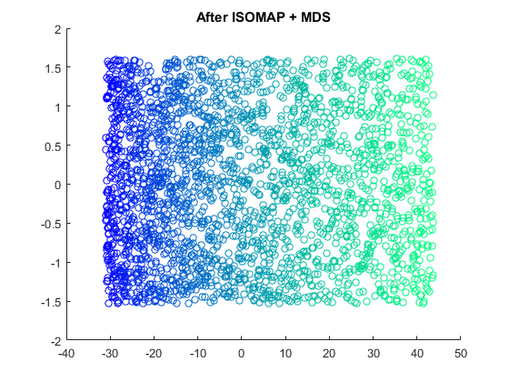

Example 04 Using MDS in Demension Reduction of SWISS ROLL
- create swiss roll by myself
- wonderful result using isomap-processed distance metric
- terrible result using Euclidean distance directly
Contents
Create DATA
if (exist('my_swiss_roll.mat', 'file') ~= 2) len = 2500; a = 1; theta = pi + 3 * pi * rand(len, 1); r_ = a * theta; r = r_ .* (0.9 + 0.1 * rand(len, 1)); swiss_roll_val = r_; swiss_roll_origin = [ r .* cos(theta), r .* sin(theta), pi * rand(len, 1), ones(len, 1) ]; alpha = [pi / 4, pi / 12, -pi / 2]; A1 = [ cos(alpha(1)), sin(alpha(1)), 0, 0; sin(alpha(1)), -cos(alpha(1)), 0, 0; 0, 0, 1, 0; 0, 0, 0, 1 ]; A2 = [ cos(alpha(2)), 0, sin(alpha(2)), 0; 0, 1, 0, 0; sin(alpha(2)), 0, -cos(alpha(2)), 0; 0, 0, 0, 1 ]; A3 = [ 1, 0, 0, 0; 0, cos(alpha(3)), sin(alpha(3)), 0; 0, sin(alpha(3)), -cos(alpha(3)), 0; 0, 0, 0, 1 ]; T = A1 * A2 * A3; swiss_roll_rotate = swiss_roll_origin * T; save('my_swiss_roll.mat', 'a', 'theta', 'swiss_roll_val', ... 'len', 'swiss_roll_origin', 'swiss_roll_rotate' ... ); else load('my_swiss_roll.mat'); end
Plot Original SWISS ROLL and ROTATED version
mark_size = 32; x = swiss_roll_origin(:, 1); y = swiss_roll_origin(:, 2); z = swiss_roll_origin(:, 3); r = swiss_roll_val; figure(1); colormap('winter'); scatter3(x, y, z, mark_size, r); title('SWISS ROLL'); saveas(gcf, 'example04-1', 'png'); xx = swiss_roll_rotate(:, 1); yy = swiss_roll_rotate(:, 2); zz = swiss_roll_rotate(:, 3); figure(2); colormap('winter'); scatter3(xx, yy, zz, mark_size, r); title('SWISS ROLL, ROTATED'); saveas(gcf, 'example04-2', 'png'); 
Bad Result with Naive Euclidean Distance
using my own function mds(_1, _2)
XX = [xx, yy, zz]; XX = bsxfun(@minus, XX, mean(XX)); XX = bsxfun(@rdivide, XX, std(XX)); [YY1, e] = mds(pdist(XX), 3); fprintf('e = [%f, %f, %f]\n', e(1), e(2), e(3)); figure(3); colormap('winter'); scatter(YY1(:, 1), YY1(:, 2), mark_size, r); title('After MDS, Using First Two Eigenvalue'); saveas(gcf, 'example04-3', 'png');
e = [4550.301645, 2478.086298, 468.612057]
Pretty Result with ISOMAP
using matlab function cmdscale(_1, _2)
geoL = @( a, phi ) ( ... a .* ( ... phi .* 0.5 .* sqrt( 1 + phi .^ 2 ) + ... 0.5 .* log(phi + sqrt( 1 + phi .^ 2 ) ) ... ) ... ); YY2 = cmdscale(pdist([geoL(a, theta), z])); figure(4); colormap('winter'); scatter(YY2(:, 1), YY2(:, 2), mark_size, r); title('After ISOMAP + MDS'); saveas(gcf, 'example04-4', 'png');